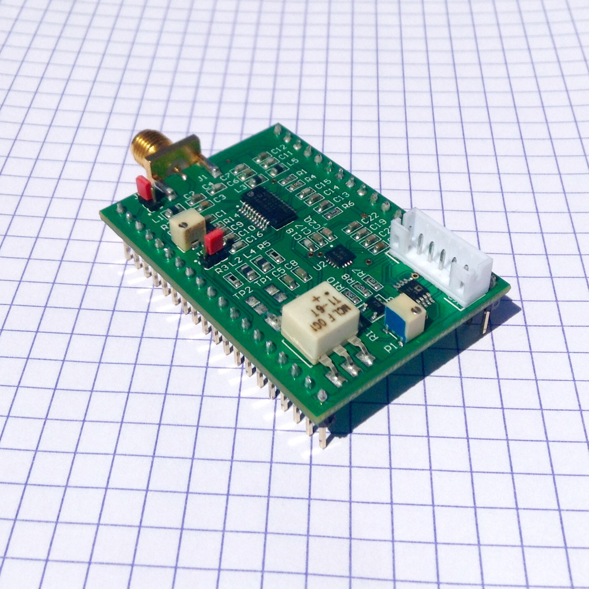
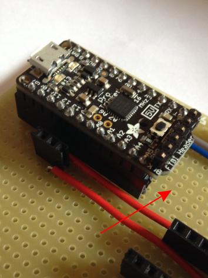

Module index
A module describes a specific hardware module designed to implement one or more function.
|  |
MDL-analog_processing_ic
|
Goblin: a TGC-Envelop-ADC module, MDL - goblin_tgcenvadc |
(Github) |
![[icon]](MDL-arduino_wifi_daq/viewme.png) |
MDL-arduino_wifi_daq
|
Croaker : the acquisition heart of the echOmods, MDL - probe_echomods_controler_croaker |
(Github) |
![[icon]](MDL-breadboard_supply/viewme.png) |
MDL-breadboard_supply
|
Mogaba, the power supply, MDL - mogaba_small_powersupply |
(Github) |
MDL-envelope_detector_v1
|
Envelope detector version 1 |
(Github) | |
MDL-filter_v1
|
Filter version 1 |
(Github) | |
MDL-high_voltage_v1
|
High voltage circuit version 1 |
(Github) | |
![[icon]](MDL-mother_board_v1/viewme.png) |
MDL-mother_board_v1
|
Mother board version 1 |
(Github) |
MDL-motor_control_v1
|
Motor control version 1, CC motor |
(Github) | |
![[icon]](MDL-motor_control_v3/./images/scheme.png) |
MDL-motor_control_v3
|
Motor control version 3, stepper motor controled by RedPitaya |
(Github) |
MDL-piezoservo
|
Cletus, simply the servo and transducer module, MDL - echomods_servopiezo |
(Github) | |
![[icon]](MDL-power_supply_v1/viewme.png) |
MDL-power_supply_v1
|
Power supply of the kit |
(Github) |
MDL-pulser_v2
|
Pulser version 2 |
(Github) | |
|  |
MDL-pulser_control
|
One-eye, the controler MDL - oneeye_controlunit |
(Github) |
![[icon]](MDL-pulser_ic/viewme.png) |
MDL-pulser_ic
|
Tobo: the HV-pulser, MDL - tobo_hvpulser |
(Github) |
![[icon]](MDL-redpitaya/viewme.png) |
MDL-redpitaya
|
RedPitaya board |
(Github) |
![[icon]](MDL-supply_v1/viewme.png) |
MDL-supply_v1
|
Module supply version 1 |
(Github) |
MDL-tgc_v1
|
Time Gain Compensation version 1 |
(Github) | |
MDL-transducer_v4
|
Transducer version 4 |
(Github) | |
MDL-tr_switch_v1
|
Protect the following electronic components from the high voltage pulse |
(Github) | |
![[icon]](MDL-aquarium/viewme.png) |
MDL-aquarium
|
Aquarium |
(Github) |
MDL-motor_support
|
Motor support |
(Github) | |
MDL-phantom_support
|
Phantom support |
(Github) | |
MDL-plate_support
|
Plate support |
(Github) | |
![[icon]](MDL-rod/viewme.png) |
MDL-rod
|
Rod |
(Github) |
MDL-rod_fixation
|
Rod fixation |
(Github) | |
MDL-stick
|
Stick |
(Github) | |
MDL-transducer_support
|
Transducer support |
(Github) |